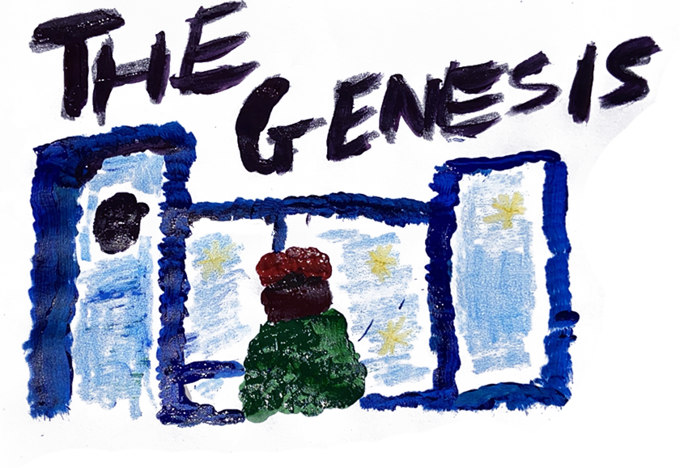
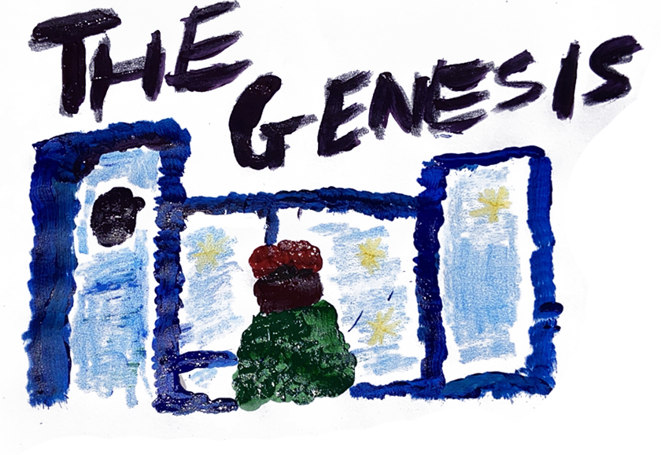

Every story has a beginning. In 2024, the story of Tino and Dripluv was all about transformation - reinventing, evolving, and becoming something new, over and over again. January of 2024 was a month of beginnings. What were you feeling at that time? Whilst other people declared “new year, new them”, Tino was stuck in a drowsy state of stress and disorientation. It’s the feeling on your shoulders when time is weighing them down, the void in the pit of your stomach when you’re hungry. Dripluv also anticipated the future. DRIPLUV: I was feeling optimistic. This year, we started to focus on thinking about and planning things. Before this, we weren’t equipped, we didn’t understand, we just weren’t locked in. What sparked your urgency and hunger to make music? What was your relationship to music at that time? For Tino, the urgency to make music was sparked by observing his peers. The people around him were achieving milestones that inspired him to do more. Music had been something natural to him, akin to breathing, but recently, the music hadn’t been feeling as authentic anymore. TINO: “It felt accessible and plain. Technically good, without evoking any emotion. It felt formulaic.” How did starting to DJ influence your creative direction? Tino took up DJing as a way to experiment. It introduced him to different sounds and made him realise he liked to bring people together through music and dance, but the formula could only be broken by the people that the duo met throughout 2024. TINO: “It made me more versatile in terms of what I create but also what I consume.” What did meeting JP mean to you at this point in your journey? TINO: “JP meant everything, means everything, is everything.” JP was the key. The musical chemistry made itself known from the start; Tino and JP were like two sides of the same coin.” Where Tino lacked, JP made up, and the motivation flowed from it. TINO: “It’s good to have someone who inspires me regularly, creatively and on a personal level.” Inspiration came through connection in the form of many different people, though. How did the people you met during this time change your thoughts about music and inspire you? From KB, who undertook the DJ journey with Tino, to Josh, owner of 122 and Fiction, who provided a space to practice with professional equipment and the DJ duo’s first real club gigs. Sekai, whose work ethic inspired them both as a DJ and a person. Tevinho, who acted as a mentor to Dripluv and Tino and pushed the idea that they needed to be unafraid to take action. Musonga, who opened their eyes to the visual and whose success created a benchmark. Gavin and Brad, whose youth and passion were grounding and invigorating. Tivien, Chris, Tarisayi, Jack and many others came to be the building blocks of a community of artists who reinforced Tino and Dripluv’s passion and pushed them again and again to be better. DRIPLUV: “Meeting these people showed me there were people out there who thought similarly to us. It expanded my palette and my understanding of art. It exposed me to new things. It inspired me.” With the advent of ITSJUSTUS, you finally created and entered a space where there are creatives who look like you and feel the same way you do. What did this unlock for you? With the help of these people, ITSJUSTUS was created: a space where creatives gathered who looked like them and felt the same way they did about art. The setup was inspired by an @xmunashe gig, with the music centred in the middle of the floor, and the audience gathered around it. The energy was electrifying. It was a pivotal moment for both of them. DRIPLUV: “It showed me how magnetic an event like that can be. If people connect with something, you get a lot of eyes on it.” TINO: “The process was the fun part. Room 286 became the watering hole for art and friends. We were planning ideas, doing shoots and posters and videos. It was a community effort.” “Take time and enjoy the journey” has become a motto for you. What does it mean, and where did it come from? A reminder for all those in the creative industry: take time and enjoy the journey. In the face of craving success, realising that you are not where you envisioned you would be, it is the stopping and appreciating the present that will save you. Don’t just trust the process, find joy in it. TINO: “I don’t remember where it initially came from. I just always had that phrase in my head or written in my notebook. Sometimes I feel anxious that I’m falling behind or taking too long. I just remind myself to focus on each step instead of just the end goal.” November tooktakes its toll: You’re at rock bottom, working at a job you hate and stressing about the future. How did you push through with everything falling apart? For Tino, the days were a blurred, together mess of working full time and stressing about where he was going to live next as plan after plan fell through. He was sitting on 3 albums, and none of them were what he wanted or needed at that point in time. The music seemed to dry up and die out. The feeling came back: time sitting on his shoulders. TINO: “I felt like I needed to have made it by yesterday. I just kept telling myself I have to keep going. There’s no other option.” What made you finally decide to move to Sydney? TINO: “I just kinda had to. I always wanted to, but I planned for it to be later in 2025. The setup of my life made it so I had to move earlier. I actually really wanted to stay in Canberra, but the accommodation situation with the boys just wasn’t happening, and I’d gotten into uni in Sydney. I only really decided in December, at the end of my contract. It was a last-minute decision.” Now it’s 2025, and you’re ready to make a comeback. What did you do during your creative hiatus? TINO: “The break was good to isolate my mind a bit. I started consuming a lot of different kinds of art. I’ve really been inspired by a lot of UK artists, visual artists, films and TV shows. I was so scared of being forgotten when I stopped using social media. It gives me so much anxiety. I hate seeing numbers and thinking about how they correlate with your value and self-worth. They don’t, but it feels like they do.” While they’ve been gone, Tino and Dripluv have been figuring out what it means to create and how to truly be an artist. How do you feel getting back into things after the hiatus? TINO: It was tricky at first. It kinda happened on a whim. I was going to Canberra for happs and got asked to do a shoot, and I said, let’s just do a show. So we did a little thing for friends and family. I remember just being in Canberra and throwing ideas at the wall. JP did a live set the next day, and that changed my brain. I was like cool, lemme just freeform, let shit happen naturally. Dripluv has also been a massive help. What was your biggest lesson in your formative years? (should this go with question 7 in some way?) TINO: Probably take time and enjoy the journey. Keep going, keep learning, keep moving. Just have fun with it. How has your definition of “making it” changed from January 2024 to now? TINO: ‘Making it’ for me has always been being at a place where people I respect also respect my art. Where can I do a show, and people are gonna come? And being able to do art full-time, and that would just be my job. Taking care of my family, travelling, all while doing art.